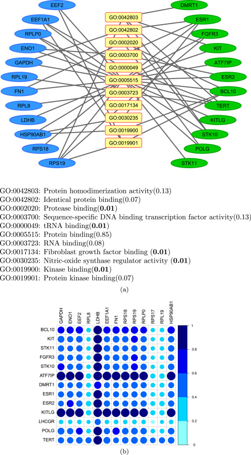
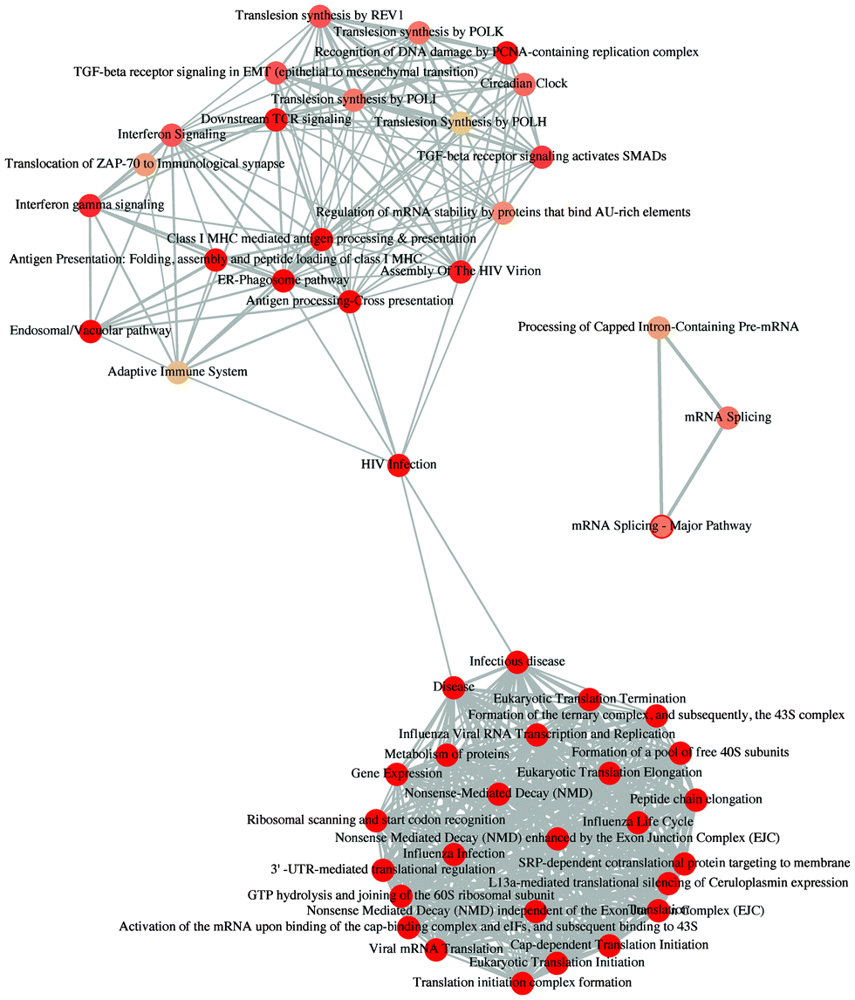
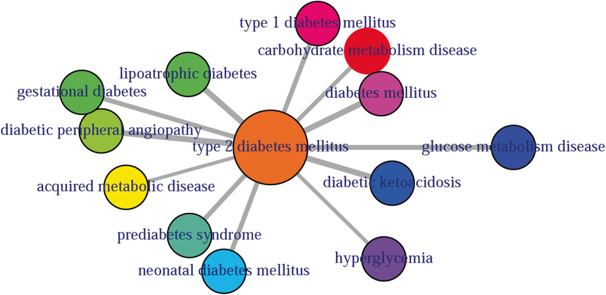

Let us know if you have published using DOSE and your publication will be featured here.
2016
Identifying Functional cancer-specific miRNA-mRNA interactions in testicular germ cell tumor
Journal of Theoretical Biology May. 2016 http://dx.doi.org/10.1016/j.jtbi.2016.05.026

ReactomePA: an R/Bioconductor package for reactome pathway analysis and visualization
Molecular BioSystems Feb. 2016 http://dx.doi.org/10.1039/C5MB00663E

2014
comoR: a software for disease comorbidity risk assessment
Journal of Clinical Bioinformatics May 2014 http://dx.doi.org/10.1186/2043-9113-4-8
